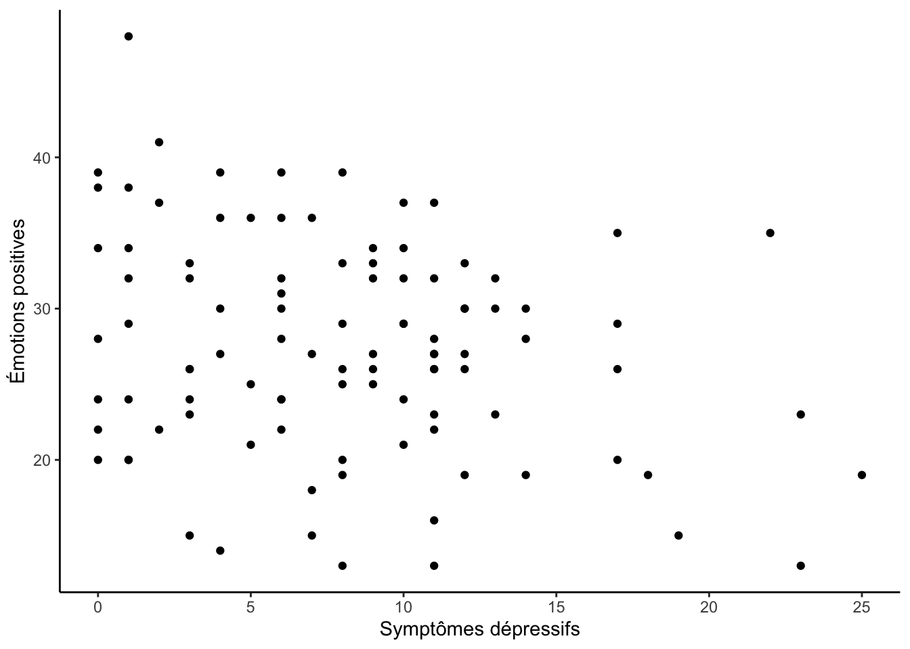

Important : Ce guide assume que vous savez comment :
Vous pouvez cliquer sur les liens ci-dessus pour consulter les guides associées.
Dans ce guide, nous utiliserons deux variables du fichier
data_visualisation.csv, soit les symptômes dépressifs
(symptomesDepressif) et les émotions positives
(emotionPositive). Pour vous évitez de tout re-coder, j’ai
pris le temps d’écrire la syntaxe nécessaire pour importer et préparer
les données :
# Packages
library(readr)
library(tibble)
library(ggplot2)
# Importer les données (data_visualisation.csv)
donnees_brutes <- read_csv("folder path")
# Préparer les données
df <- tibble(id = 1:nrow(donnees_brutes))
df$symptomesDepressifs <- donnees_brutes$CESD_PreTotal
df$emotionPositive <- donnees_brutes$PANAS_Pos_PrePour suivre les exemples dans ce guide, vous devrez donc :
1. avoir téléchargé le fichier data_visualisation.csv sur
Studium
2. noter le "folder path"
3. exécuter la syntaxe ci-dessus (en changeant le
"folder path").
Voici à quoi devrait ressembler votre banque de données après l’étape de préparation :
df## # A tibble: 100 × 3
## id symptomesDepressifs emotionPositive
## <int> <dbl> <dbl>
## 1 1 9 27
## 2 2 7 27
## 3 3 1 20
## 4 4 11 26
## 5 5 23 23
## 6 6 5 21
## 7 7 10 24
## 8 8 8 29
## 9 9 4 27
## 10 10 2 41
## # … with 90 more rowsCe guide décrit comment calculer la corrélation de Pearson entre deux variables continues.
Pour obtenir uniquement la corrélation, il est possible d’utiliser la
fonction cor() du package R de base :
cor(df$symptomesDepressifs, df$emotionPositive)## [1] -0.2430641Dans ce cas-ci, on observe une corrélation négative (r ≈
-,24) entre les symptômes dépressifs et les émotions positives (qui
l’eut cru!). Les deux arguments nécessaires à cette fonction
(x et y) désigne simplement les deux variables
dont on souhaite investiguer l’association (dans ce cas-ci,
df$symptomesDepressifs et df$emotionPositive).
L’ordre n’a pas d’importance.
La fonction cor() ne vous permet pas de vérifier si la
corrélation observée est significative. Pour ce faire, vous devrez
utiliser la fonction cor.test(), qui est dans le package
stats (installé par défaut dans R). Cette fonction vous
permettra d’obtenir la valeur de p (p-value) d’une
corrélation et ainsi vérifier la significativité de la corrélation
observée (en comparant la valeur de p à votre seuil alpha critique).
Voici la syntaxe :
cor.test(df$symptomesDepressifs, df$emotionPositive,
alternative = "two.sided")##
## Pearson's product-moment correlation
##
## data: df$symptomesDepressifs and df$emotionPositive
## t = -2.4806, df = 98, p-value = 0.01482
## alternative hypothesis: true correlation is not equal to 0
## 95 percent confidence interval:
## -0.41945644 -0.04898461
## sample estimates:
## cor
## -0.2430641Dans cet exemple, on voit que la corrélation entre les symtpômes dépressifs et les émotions positives est négative et significative (r ≈ -,24; p < ,05).
Comme pour la méthode précédente, les deux premiers arguments
(df$symptomesDepressifs et df$emotionPositive)
désigne simplement les deux variables (x et y)
dont on souhaite investiguer l’association. Le dernier argument
(alternative =) désigne la direction du test d’hypothèse
que l’on pose. Pour une hypothèse bilatérale (corrélation positive ou
négative), vous devez indiquer "two.sided", comme dans
l’exemple ci-dessus.
Pour poser l’hypothèse d’une corrélation supérieure ou inférieure à
0, vous pouvez indiquer "greater" et "less"
respectivement à l’argument alternative =. Par exemple
:
cor.test(df$symptomesDepressifs, df$emotionPositive,
alternative = "less")##
## Pearson's product-moment correlation
##
## data: df$symptomesDepressifs and df$emotionPositive
## t = -2.4806, df = 98, p-value = 0.00741
## alternative hypothesis: true correlation is less than 0
## 95 percent confidence interval:
## -1.00000000 -0.08084165
## sample estimates:
## cor
## -0.2430641Comme on peut le constater, la corrélation est toujours négative, mais la valeur de p est désormais plus petite (r ≈ -,24; p < ,01). Cela est dû au fait que, lorsqu’on pose une hypothèse unilatérale, on ne considère qu’une seule queue de la distribution t plutôt que les deux.
La fonction cor() du package R de base permet aussi
d’obtenir la corrélation de Spearman à condition de spécifier
"spearman" dans l’argument method = comme ceci
:
cor(df$symptomesDepressifs, df$emotionPositive,
method = "spearman")## [1] -0.1858702Celle-ci est légèrement plus faible que la corrélation de Pearson obtenu précédemment.
La corrélation de Spearman est plus appropriés que la corrélation de Pearson lorsque les données ne sont pas homoscédastiques (c.-à-d. que les observations ne sont pas distribuées de façon homogènes). On peut vérifier l’homoscédasticité à l’aide d’un diagramme de dispersion :
library(ggplot2)
ggplot(df, aes(x = symptomesDepressifs, y = emotionPositive)) +
geom_point() +
labs(x = "Symptômes dépressifs", y = "Émotions positives") +
theme_classic()
On peut observer la légère tendance inverse que se reflètait dans la corrélation de Pearson : les observations avec de plus hauts niveaux de symptômes dépressifs ont de plus faible niveaux d’émotions positives (et vis-versa). Au niveau de l’homoscédasticité, on pourrait argumenter que l’homogénéité de cette distribution n’est pas adéquate, surtout en comparant les niveaux faibles et élevés de symtpômes dépressifs.
La fonction présenté pour tester la corrélation de Pearson fonctionne
également pour la corrélation de Spearman. Il faut simplement assigner
Spearman à l’argument method = comme ceci
:
cor.test(df$symptomesDepressifs, df$emotionPositive,
alternative = "two.sided",
method = "spearman")## Warning in cor.test.default(df$symptomesDepressifs, df$emotionPositive, :
## Cannot compute exact p-value with ties##
## Spearman's rank correlation rho
##
## data: df$symptomesDepressifs and df$emotionPositive
## S = 197625, p-value = 0.0641
## alternative hypothesis: true rho is not equal to 0
## sample estimates:
## rho
## -0.1858702Note : l’avertissement « Cannot compute exact p-value with ties » est normal. Il indique simplement qu’une méthode d’approximation a été utilisée pour obtenir la valeur de p puisque certaines observations obtiennent le même rang.